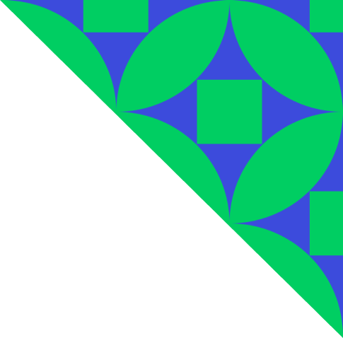

<nz-layout class="height-100 cabinet">
  <nz-sider
    nzCollapsible
    nzWidth="200px"
    class="cabinet__sidebar indigo-bg"
    
    nzBreakpoint="lg"
    (nzCollapsedChange)="handleSidebarStyles($event)"
  >
    <div class="logo">AgroID</div>

    <ul nz-menu nzMode="inline" class="indigo-bg cabinet__sidebar__menu">
      <li nz-menu-item nzSelected routerLink="personal" class="">
        <i nz-icon nzType="user"></i>
        <span>Персональные данные</span>
      </li>
      <li nz-menu-item routerLink="legalperson" >
        <i nz-icon nzType="idcard" nzTheme="outline"></i>
        <span>Юридическое лицо</span>
      </li>
      <li nz-menu-item routerLink="">
        <i nz-icon nzType="import" nzTheme="outline"></i>
        <span>Выход</span>
      </li>
      <li nz-menu-item routerLink="">
        <i nz-icon nzType="question-circle" nzTheme="outline"></i>
        <span>Помощь</span>
      </li>
    </ul>
  </nz-sider>
  <nz-layout>
    <nz-content style="overflow: auto;">
      <div class="height-100 cabinet__content" nz-row>
        
        <div nz-col nzXs="1" nzSm="2" nzMd="2" nzLg="2" nzXl="2"></div>
        <div nz-col nzXs="22" nzSm="20" nzMd="20" nzLg="20" nzXl="20">
          <div style="padding-top: 10px">
            <ng-container *ngFor="let language of languages">
              <button
                class="langBtn"
                nz-button
                (click)="onChangeLanguage(language)"
                [nzType]="
                  currentLanguageCode === language.code ? 'text' : 'link'
                "
              >
                {{ language.shortName }}
              </button>
              <nz-divider nzType="vertical"></nz-divider>
            </ng-container>
          </div>

          <div style="margin-top: 5vh">
            <router-outlet></router-outlet>
          </div>
        </div>
        <div nz-col nzXs="1" nzSm="2" nzMd="2" nzLg="2" nzXl="2"></div>
      </div>
    </nz-content>
  </nz-layout>
</nz-layout>
<!-- [ngClass]="menuFixed === true ? 'sidebar__mobile' : 'sidebar__desktop'" -->